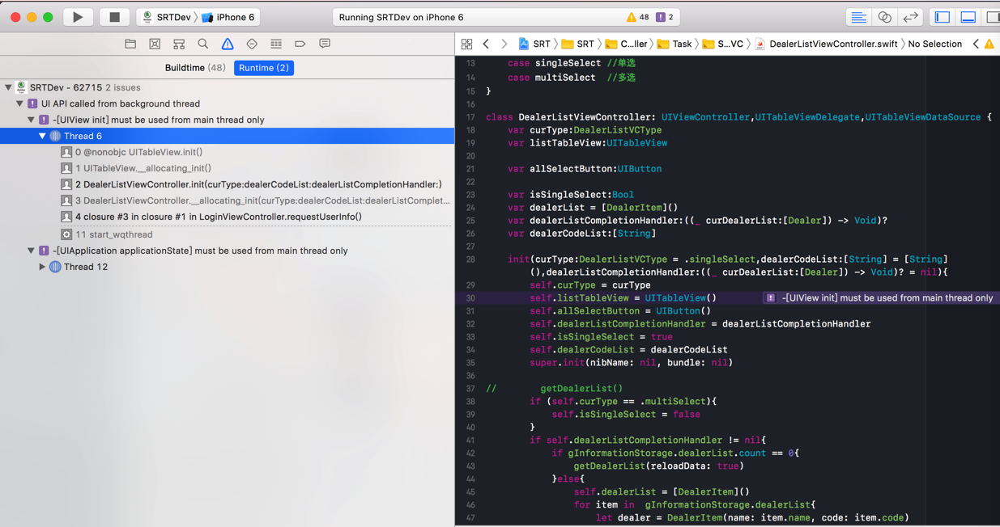
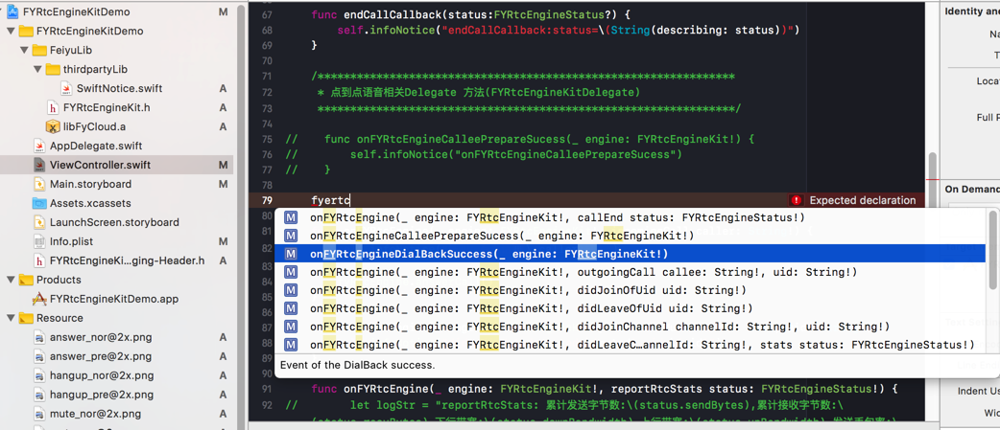
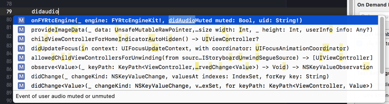
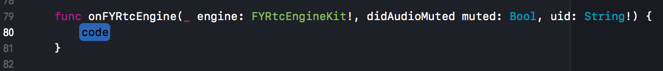

Xcode
苹果的平台的软件的IDE：Xcode
可用来开发苹果旗下的众多平台的软件：
- 桌面端
macOS
- 移动端
iOSwatchOStvOS
优点
集成了和自己的语言和环境高度整合的功能和智能提示
比如：

此时是当程序崩溃了，提示对应的出错的地方
到底是哪里的代码写错了：把UI相关的内容，放在了非主线程中执行
这样才能帮助我们快速定位问题，改掉错误代码
-> 否则这类NSInternalInconsistencyException的问题，需要花费很大精力，并且很难定位到具体错误位置，也就很难解决掉问题的。
Xcode 9 (+ Swift 3.2?) 支持 调试时监测出哪些代码 在后台线程操作主线程=UI线程中的元素了
-》 提示会导致崩溃
-》有些代码并不会立刻崩溃，但是往往后续遇到时，会崩溃
-》而对于这种问题：
在后台线程操作主线程=UI线程中的元素
- 之前版本的Xcode并没有能力监测出来
- 所以如果需要自己去找，就很麻烦
- 即使给出了崩溃日志，出错的代码的定位也都很困难
- 所以如果需要自己去找，就很麻烦
- 同样的有问题的代码，在iOS11之前的，没有崩溃
查看到即使没文档的库的有哪些函数
对于集成了的第三方库，即使没有文档，也可以通过Xcode的智能提示，而间接知道有哪些函数
比如：
【已解决】用飞语FYRtcEngineKit去实现基本的iOS间的语音通话
期间，对于飞语的SDK有哪些函数，除了看头文件FYRtcEngineKit.h之外，还可以通过，在设置了当前类为代理的前提下，输入对应字符串，而动态提示出对应的函数：

另外，智能提示可以（在.swift代码中）帮助（从OC的函数）自动获得Swift版本的函数：
对于官网和头文件都只提供了OC的库函数，比如：
- (void)onFYRtcEngine:(FYRtcEngineKit *)engine didAudioMuted:(BOOL)muted Uid:(NSString *)uid;
而如何转换为此处希望的Swift的版本，则也可以通过智能提示而自动输入：

回车后即可自动写出函数原型：
